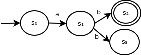
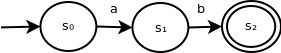
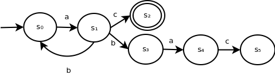
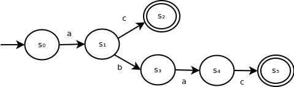

Background
We've seen the process of converting and ε-NFA to an NFA. This process will be extremely helpful in converting regular expressions into a state machine that's easy to use. However, NFAs may still have multiple transitions for the same input symbol from the same state, which makes the recognition process difficult. In this section, we'll demonstrate how to convert an NFA into a DFA in order to provide a simpler recognition mechanism.
Example
The following NFA contains multiple transitions for the same input symbol from the same state:
This NFA recognizes the language L = {ab}. When parsing the string ab, after we encounter symbol b in state s1, we can choose to transition to state s2 or s3. Since we are only looking for a single path to an accepting state, we would choose to transition to s2 and accept the string.
As a result, this NFA is equivalent to the following DFA:
More complex example
The following NFA is a more complex example of an NFA that can be reduced:
Here, it's less clear how to reduce this to a DFA.
Now, consider the transitions from s1 for input symbol b. The possible set of next states is: {s0, s3}.
Since we only need to find a single path for a certain input string to an accepting state, we would continue this process. For example, if the next input symbol is a, the possible set of next states is: {s1, s4}.
Reduction process
To outline the reduction process, for our set of states S, we must consider consider the power set of S.
We know that S = {s0, s1, ..., sn - 1}.
P(S) = {{}, {s0}, ..., {sn - 1}, {s0, s1}, {s0, s2}, ..., {sn - 2, sn - 1}, {s0, s1, s2}, ..., {s1, s2, ..., sn - 1}}
Informally, the power set of S is the set containg all possible subsets of S.
Since, as illustated above, we need to consider combinations of possible states, we will construct a new set of states in our DFA which maps to some combination of states from our DFA, which is some element of the power set of (S).
Our DFA's start state corresponds to the element {s0} from P(S).
Then, for each input symbol corresponding to a transition in any state from NFA, we create a new DFA state corresponding to the set of all states reachable from that symbol (or reuse the DFA state corresponding to that combination if one exists) and add the corresponding transition.
We set our new DFA state to accepting if at least on corresponding NFA is accepting.
More complex example reduced
Following the instruction from above, our complex NFA can can be reduced to the following DFA:
![Simplified DFA. This DFA contains 6 states, each of which represents some set of states from the DFA. State with set s0 transitions to state with set s1 on input symbol a. State with set s1 transitions to state with set s2 on input symbol c. State with set s1 transitions to state with set s0, s3 on input symbol b. State with set s0, s3 transitions to state with set s1, s4 on input symbol a. State with set s1, s4 transitions to state with set s2, s5 on input symbol c. All new states containing s2 are accepting.](assets/examplecomplexdfareduced.png)
Finally, we can re-label the states as follows:
Note that the two states whose state set from the NFA contain s2 are marked as final statse.
Conclustion
In conclusion, we now have a process to convert an NFA to a DFA. Using Thompons's construction along with the ε-NFA to NFA conversion process, we can now convert regular expressions in to NFAs for recognition.
GitHub Repository: https://github.com/bprollinson/ripal
Copyright © 2017 Brendan Rollinson-Lorimer